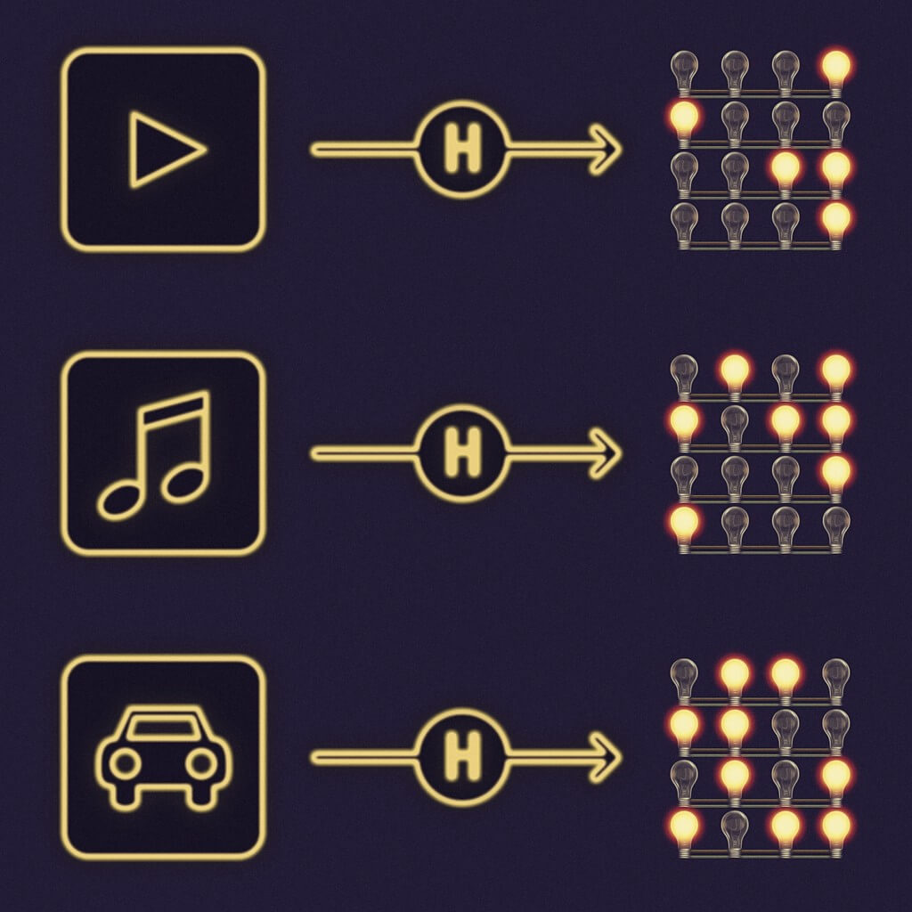
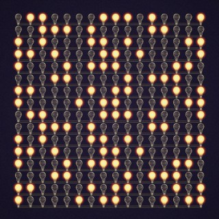
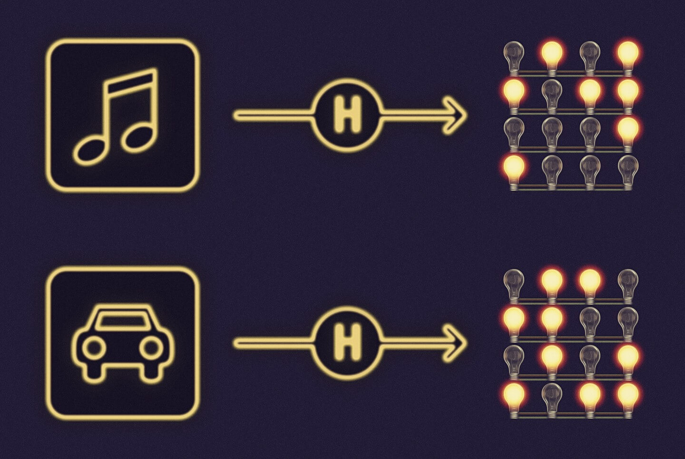

Blockchain Underpinnings: Hashing
Light bulbs, bits, and bytes
You may have heard that all data in computers, is either 0 or 1. The smallest piece of data is a bit, and is either a 0 or 1. Imagine a computer as having many light bulbs, and the bulbs are either on (1) or off (0). Different pieces of data are represented by the pattern displayed by the bulbs. Large data, such as videos, use many light bulbs. A short email, would use fewer light bulbs. A single light bulb is a bit. Another term you may have heard of is a byte, which is simply a group of 8 bulbs. A megabyte of data is 1 million bytes, which would be 8 million bulbs.
Today’s home computers have billions and even trillions of light bulbs. But with the power of doubling, notice that even just a group of 256 bulbs is almost enough to represent any of the observable particles in the universe. Imagine all the patterns that a group of 256 bulbs can produce, and it is an astronomical number: mathematically it’s 2 to the power of 256.
Cryptographic hash functions
A hash function, takes any input, and produces an output of a specific size. The process of applying a hash function to some data, is called hashing. The output of a hash function is called a hash. The basic feature of a particular hash function is the size of the output it produces. For the examples in this article, we’ll use a hash function that produces an output of 256 bits (32 bytes). There are hash functions to produce smaller output, and others that produce larger output. There are also many hash functions that produce an output of 256 bits, but the examples don’t care about which specific one is used.
Using the example hash function, when a video of many megabytes is hashed, the output will be 256 light bulbs with some of the bulbs lighted. When a short email is hashed, the output will be 256 light bulbs with a different pattern. In some ways, hashing looks like compression. To briefly explain a difference between the two, hashing always produces the same number of light bulbs, whereas compressing a video of many megabytes will still produce an output of millions of light bulbs. A compressed video, can be decompressed to obtain the original video. When a video is hashed to only 256 light bulbs, reconstructing the many megabytes of the original video from the hash is unlikely. It may not sound desired, but this behavior is actually a powerful feature of hash functions.
One critical characteristic of a secure cryptographic hash function is that it is one-way. This means that from the output, it is virtually impossible, or mathematically and computationally improbable, to determine what the input is. That is, given a hash, it should be infeasible to learn about or find the input data that was provided to the hash function. The technical term for this is pre-image resistance.
A consequence is that a hash function should consume approximately the same amount of time, whether it is hashing a large or small input. Another desirable outcome is that hashes, patterns of light bulbs produced by hash functions, should appear to be random. Hashing the data “password1” should produce a very different pattern of light bulbs, than from hashing the data “password2”. Otherwise, if the patterns were similar, an adversary could infer that the inputs are similar, and if either or related words (like “pass”, “word”) are discovered, the passwords could be found easily. Secure hash functions produce drastically different outputs, even if inputs differ by only a single bit.
The ideal behavior for security is that given a hash, the only way to find the input data is by hashing all combinations of inputs, until the correct input is hashed. If the input is random, finding it would take an indeterminate amount of time, and thus effectively impossible.
While finding the input for a hash should be very difficult and take a very long time, computing a hash should be fast to compute. One can provide a hash function, with a very large input, and still receive the output in less than a second. Given that today’s smartphones perform billions of computations per second, 1 second is a long time computing-wise.
Cryptographic hash functions should also be collision resistant. A collision is when a hash function produces the same output, for more than one input. If hashing data1, which maybe a spreadsheet, and hashing data2, which maybe a picture, produce the same output, then a collision has occurred.
The importance of the properties of secure cryptographic hash functions will be more evident as we describe blockchains and hashing.
Blockchains and Hashing
Hashing is extensively used with blockchains and here are some examples.
Addresses on a blockchain are derived by a process of hashing public keys. An Ethereum account is computed by hashing a public key with Keccak-256 (developers should read the crucial distinction with SHA3–256). A Bitcoin address is computed by hashing a public key with SHA2–256 and RIPEMD160.
Collision resistance of the hash functions are important because if 2 people generate the same address (a collision) then either could spend the money sent to that address.
Signatures are a fundamental part of blockchains. Similar to signing a check, cryptographic signatures determine which transactions are valid. Signatures are generated from a hash of data to be signed, and a private key.
Transaction hashes are highly visible in a blockchain. Instead of describing a transaction as “the transaction where Alice sent Bob X units of currency at date D and time T”, transactions are referred to by their hash. For example, 5c504ed432cb51138bcf09aa5e8a410dd4a1e204ef84bfed1be16dfba1b22060 is a transaction in the Ethereum blockchain. Transaction hashes are also more direct to use, as compared to a description like the “1024th transaction in block 1337”. Just copy the hash, and paste it into a blockchain explorer, to see details of the transaction.
Metaphysically, blocks in a blockchain are identified by their hash, which serves the dual purpose of identification as well as integrity verification. An identification string that also provides its own integrity is called a self-certifying identifier.
For blockchains that use mining, the Proof-of-Work is a number, called a nonce, that when combined with other data and hashed, produces a value smaller than a specified target. Mining makes full use of the properties that hashing is fast one-way, and not reversible. Finding a valid nonce takes time because there are no clues available that will lead to a sufficiently small hash, and the only approach to find one that is smaller than the target, is to compute many hashes: in Bitcoin, currently that’s over 10 septillion hashes. When a valid nonce is found, verifying it is done within a second, and then the new block propagates across the network, forming the latest consensus and blockchain.
Since storage in blockchains is permanent, and storing large amounts of data on a blockchain is not economical, the practical way to store data on a blockchain is to store a fixed (and normally smaller) size representation of the data called the “hash of the data.” One use for a blockchain is as a timestamping service. Suppose there is a picture that you wanted to prove currently exists, and is not fabricated in the future. You could store the picture in the blockchain now, and a year later, if a judge asks if the picture was really taken a year ago, you could show it on the blockchain. But, since you know about hashes, you hash the picture and store the hash on the blockchain instead. When the judge asks for proof, you provide the picture, then the judge can hash the picture and compare it against the hash that you stored on the blockchain.
There are also more advanced examples where hashing is involved, for example in Merkle trees which are at the root of innovation for blockchains, scalability, and mobile and light wallets.
Hashes for identifying anything securely
Secure cryptographic hash functions are one-way, fast to compute, and collision resistant. Combined with the property that they process any type of input to produce an output of fixed-size, called a hash, hashes are very useful as an identifier for any data. Hashes of length 256 bits represent an astronomical number of combinations, that they are more than enough to be a globally unique identifier for the Internet of Things, even at the scale of nanotechnology and beyond. And these hashes can be written as 64 characters (hexadecimal), which make them practical enough to use as identifiers. In blockchains, hashes are used as identifiers for blocks, transactions, and addresses.
Hashes enjoy advantages of security and privacy. If a song is recorded in a digital format, and the hash of the song is stored on a blockchain, there is no way for someone else to claim that they were first to create the song that produced the hash, without knowing the song itself: someone can’t write a song and tamper with its hash. Similarly, unless the song or other digitized property or data is revealed, it remains private with only the hash displayed on the blockchain. Ownership registries can be stored on the blockchain, with the details of what’s owned remaining private among the parties involved. As a simple example, a vehicle registry could store hashes of car data (pictures, VIN, license plate) and only the owners, insurance company, and government would know the actual details of the vehicle.
Deeply theoretical but widely practical
Designing cryptographic hash functions require a combination of art and science. To prove their security requires advanced mathematics and computer science. Blockchains are the first user interfaces filled with hashes, available to a broad demographic. Good user experience will hide many hashes behind the scenes, but just as we see various id and serial numbers today, sometimes a hash is the best identifier for something instead of a long-winded description. As technology such as cryptography and the Internet of Things become widespread, expect to see 64 character hashes more in the future!
Source: https://medium.com/@ConsenSys/blockchain-underpinnings-hashing-7f4746cbd66b#.94m1n6n3b
Author: Joseph Chow, ConsenSys.